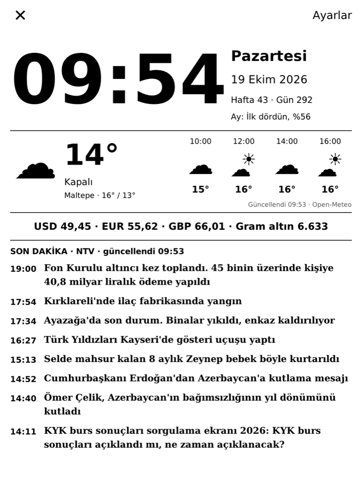
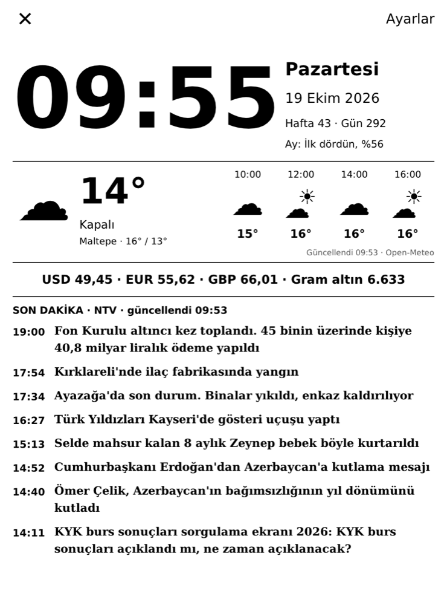
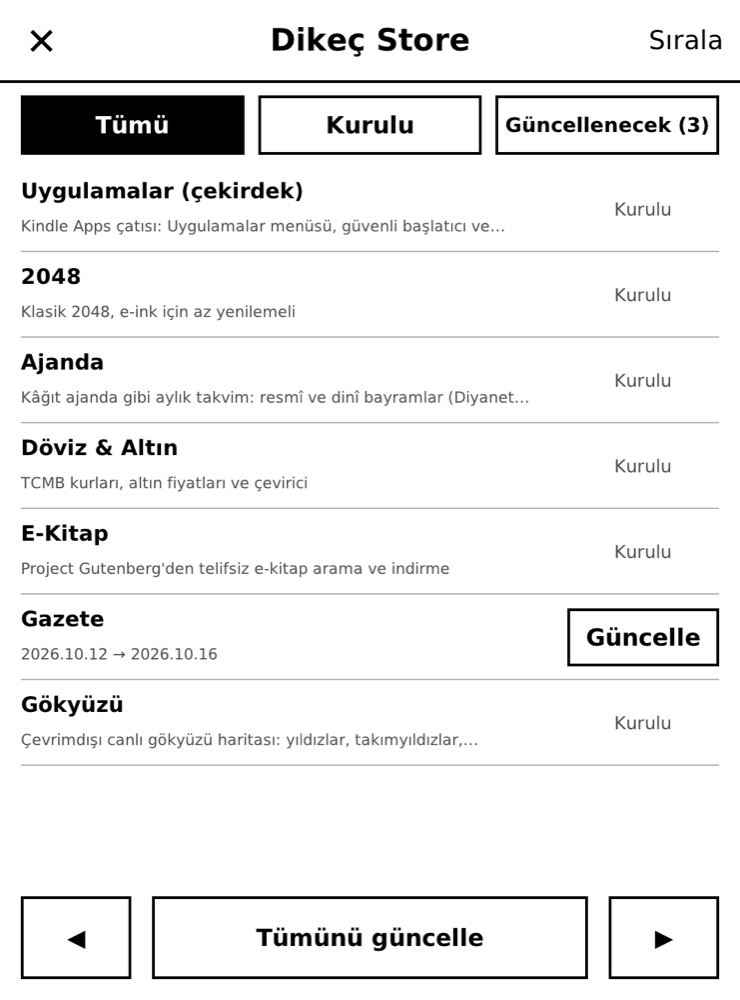

Kindle'ınız masa panosuna, sabah gazetesine, yıldız haritasına ve bir şiir defterine dönüşsün — pil günlerce dayansın, ekran her dokunuşta yanıp sönmesin.
Her uygulama aynı kurallarla yazıldı: işi yoksa cihazı uyandırmaz, ekranı gereksiz yere yenilemez, Kindle'ın sistemine dokunmaz.
Masa uygulamaları Kindle'ı gerçekten uyutur; saat çipi istenen aralıkta (1–60 dk) uyandırır, ekran e-mürekkep sayesinde güç harcamadan kalır.
Haber, hava ve döviz 1–24 saatte bir çekilir; Wi-Fi o birkaç saniye açılır, sonra kapanır. Pil bile veriyle birlikte okunur.
Yalnızca değişen bölge flaşsız yenilenir. Tam yenileme yalnızca yeni ekranlarda ve saat başı gölgeleri temizlemek için.
Her şey /mnt/us altında; sistem dosyalarına dokunulmaz. SSH parolalı, e-kitaplar yalnızca yasal kaynaklardan.
Büyük saat, hava durumu ve saatlik tahmin, döviz ve gram altın, seçtiğiniz kaynaktan son dakika, tarihte bugün, namaz vakitleri, Ay evresi. Bir başlığa dokunun, haberin tamamı açılsın.


Açınca hepsi bir menüde. Aşağıdaki görüntüler uygulamaların kendisinden alındı — gerçek veriyle, Kindle'ın 1072 × 1448 ekranında nasıl görünüyorlarsa öyle. Büyütmek için dokunun.

Uygulamalar menüsündeki Dikeç Store, depodaki her şeyi kurulu sürümlerle karşılaştırır. Tek dokunuşla kurun, güncelleyin ya da kaldırın; ayarlarınız ve kayıtlarınız kalır. Sırala ile menünün düzenini siz belirleyin.
Gereken: jailbreak'li, kindlehf (FW ≥ 5.16.3) bir Kindle; KMC araçları ve kpm kurulu
(bkz. kindlemodding.org). Kindle Basic 11. nesil, FW 5.19.2 üzerinde test edildi.
Bu dosya depoyu ekler ve bütün uygulamaları kurar; tekrar çalıştırırsanız günceller.
documents klasörüne kopyalayın.Tarayıcılar Kindle'a doğrudan dosya yazamaz; bu yüzden en kısa yol tek dosya ve bir dokunuş. Kindle'a SSH ile bağlanabiliyorsanız aynısı komutla:
Kindle'a SSH ile bağlanıp:
/var/local/kmc/bin/kpm add-repo https://kaandikec.com/kindle-apps/manifest.json /var/local/kmc/bin/kpm update
Uygulamalar menüsü, güvenli başlatıcı ve Dikeç Store bu pakette:
/var/local/kmc/bin/kpm -y install kindle-apps-core
Kitaplıkta Uygulamalar'ı açın → Dikeç Store → istediğinize Kur. Güncellemeler de buradan gelir.
Uygulamalar açılırken KOReader kapalı olmalı (dokunmatik ekranı o kullanır). Her şey yalnızca
/mnt/us altına kurulur; kaldırmak için Dikeç Store'da Kaldır ya da kpm uninstall.
Hiçbir uygulama hesap ya da API anahtarı istemez; veriler aşağıdaki açık kaynaklardan gelir ve ekranda anılır.